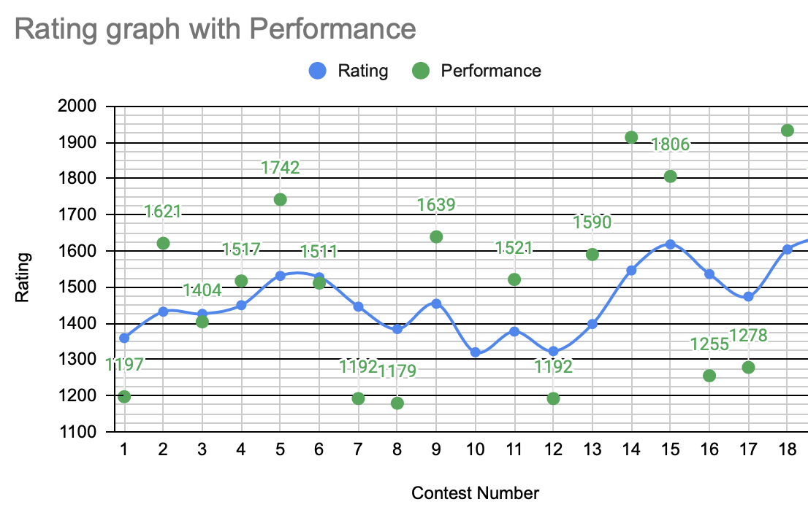
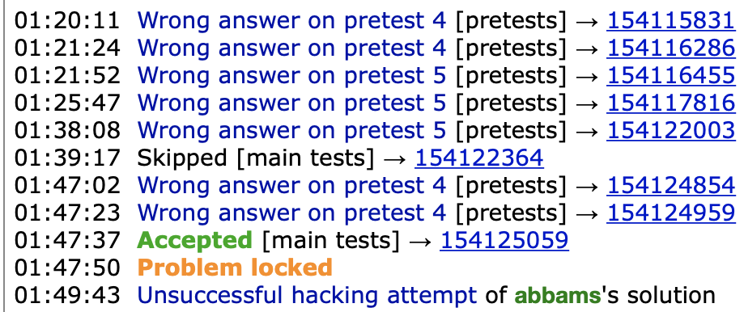
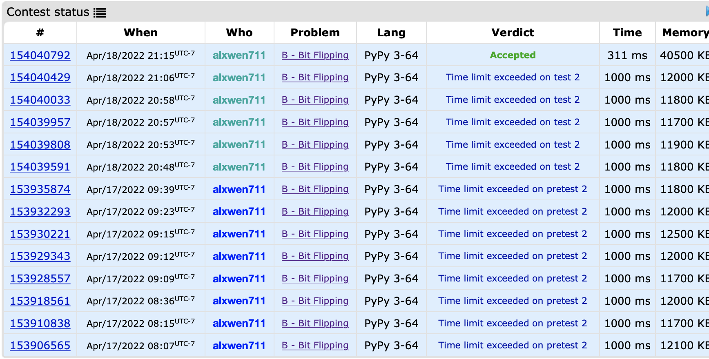

April 1st-15th
Welcome back to my attempt to catch up this journal to the current present day of May 11th. Optimistically, at the rate I’m going, this journal will finally be up to date by the time the May entries are finished. While the course load I was taking this term was being a massive pain as usual, these two weeks were actually quite tame compared to the last month, even if one of my finals was on April 13th. With the spring term coming to a close, and my recent results in past contests being not bad for a change, my confidence at this point was actually good.
What proceeded to occur these two weeks were two of my best contests runs yet. Going into Round 781 I was still looking to return to the Specialist level as I was still at 1398 ELO before this contest. By the end of this contest though, I would gain 148 ELO with an estimated contest performance level of 1922 ELO. It’s actually a bit unusual how I pulled this off, as I still only solved 3 of the 5 problems in this contest, but although Problem C was not solved for me since I have a weak point with tree related problems, this was my first contest where I fully solved Problem D. Problem D itself is an example of what I mean when the question difficulty pivots from implementation to actually determining the solution; Problem C’s solution is relatively easier to find as it just requires simulating the tree, and then using a greedy method by choosing to infect whichever node has the most healthy children remaining. I ended up finding this solution but was unable to implement it in a viable \(O(n)\) or \(O(n \log n)\) time successfully. Problem D on the other hand is trickier to figure out how to solve the problem to begin with, but I figured out the solution, implementing it was actually quite simple compared to Problem C. The editorial for the contest explains the solution to this problem as well as an alternative method that can determine the number in at most 22 queries instead of 30 needed for the method I used, but as a hint, you can determine the value x by using each query to determine one bit at a time; the first query should be used to determine the bit with a value of 1, then the second query builds on that info to determine the bit with a value of 2, then the third query uses that info to determine the bit with a value of 4, and so on. Due to Problem D being worth more points than Problem C, I effectively beat everyone in the contest who solved Problems A to C, and lost to everyone who solved at least Problems A to D. Combined with my speed in solving the problems, this contest was my first time gaining over 100 effective ELO, my first top 500 finish in a contest, my first time solving a 2000-rated problem (prior to this, my best solve was a 1600-rated problem), my first Candidate Master level performance, AND it brought me back within striking distance of my original goal of reaching Expert in 6 months, being only 54 ELO away from 1600.
After that breakout performance, it is reasonable to think that the next contest I took part in, Educational Round 126, my performance would be more inline with previous contests. And it was, but not by that much. I still solved 3 out of 6 problems, and while there was no miracle Problem D solve, my speed on the first 3 problems was good enough to give me a back-to-back top 1000 finish in contests, and this 1818 ELO level performance was enough to push my rating to 1618.

I have done it, I have officially reached Expert on CodeForces. Throughout the last 4 months, the most significant challenge was consistency. You see, to reach 1600 ELO, there is two main paths to doing so:
Consistently solve Problems A through C on Division 2 level contests at a relatively fast pace each contest, how fast depends on the difficulty of Problem C, or:
Have a high enough skill cap to at least occasionally be able to solve Problem D, and rely on gaining significant rating from the contests where you can solve A through D to offset losses when you can only solve A to C slowly or worse.
For most contests I have the structural knowledge to solve Problems A through C each time, but I would have inconsistent contests at times where I either failed to solve Problem C, or would end up taking an egregious long time to solve the easier Problem B. As such, the main improvement I made over the last 4 months was being able to apply mathematical knowledge to the more complex problems more consistently. Naturally the main cause of this improvement is doing more practice problems. In particular for practising, doing problems rated from 800 up to around 100-200 points above your skill level evenly is optimal; most guides will tell you to always do problems around 100-200 points above your level, but equally as important is being able to solve easier problems consistently and quickly so that you are left with enough time to tackle the harder problems at your skill cap. That and making sure you are actually physically and mentally prepared for the contest are key to actually doing well.
In other news besides me reaching my CodeForces goal 2 months early, I turned 20 on April 5th. Happy birthday to me.
April 16th-30th
The second half of April, looking at my pretty much blank GitHub submissions and my pretty much non-existent journal entries from this time, were a result of two things:
SFU Spring Term finally ended, and for lack of a better explanation, all the stress from that term pretty much recoiled back to me and I pretty much burnt out for a solid week, and
There’s still final exams. Not going to say which course, but for one particular course, due to the mess that was last month, I pretty much was forced to “learn” (ie. cram) half of the course material in about 6 days. I’m still not exactly sure how I pulled through that.
Combine the above with the fact that this entry was started on May 20th and it’s understandable that my recollection of the 3 competitions that occured in this period are a bit foggy. Regardless, I’ll do my best in recapping them:
If you recall from the previous journal entry, you might remember that the main reason I was able to reach Expert was solely because I had improved my “skill cap”, meaning that I am able to solve the harder problems occasionally, even though my consistency on easier problems was still lacking. Round 782 and Round 783 were both proof of this. In the first of these contests, I solved Problem A quite easily, but then proceeded to implode on Problem B with 8 TLE submissions. The second contest went marginally better, as I did solve the first 3 questions successfully, but my process in solving Problem C could only be described as a dumpster fire. Below is my submission history in the contest for this problem, with the times on the left indicating the amount of time passed in the 2 hour contest.

These two contests, while they were mild failures for me considering how well I had been doing recently, were actually very good learning experiences in many ways. To start, even though it looks like at first Round 782 went much worse than Round 783 solely based of the number of problems solved, rating analysis finds that my performance on these two contests were 1255 and 1270 ELO respectively, which point to similar significant underperformance, but not as catastrophic as the “I can’t count to five” incident. The similar performance levels also gives an indication to how CodeForce contest difficulty can vary; CodeForces contest difficulty variance is a topic that deserves it’s own post entirely (it will be linked here eventually), but in this case, this table represents approximate percentages of people solving each problem:
| Problem | Low Solve Rate | High Solve Rate |
|---|---|---|
| A | 85% | 99% |
| B | 60% | 85% |
| C | 15% | 45% |
| D | 5% | 15% |
| E | 0.25% | 3% |
| F+ | 0.01% | 0.7% |
Round 782 was an example of a harder contest; Problem A had a 65% solve rate, the lowest I have ever seen, while Problem B had a not much better 38% solve rate. The difficulty of the contest returned to normalish levels from Problem C onwards, but I never reached that point because I was continually stuck on Problem B. This means that anyone who solved problems A and B, even if very slowly, likely beat me, and this is reflected by the fact that I ended up around the top 40th percentile in this contest. On the other hand, Round 783 saw a 93% success rate for problem A, 74% solve rate for problem B, and 44% solve rate for problem C. Even though in this contest I did get Problem C, the fact that I only solved it after many mistakes meant that my end score still loses to basically everyone who solved A through C, which is how I also ended up around the top 40th percentile in this contest.
Besides the varying difficulty in these contests, both of these contests saw equally critical errors made by myself. Here is an attempt I submitted in the contest for Problem B in Round 782:
import sys
for i in range(int(sys.stdin.readline())):
n,k = map(int,sys.stdin.readline().split())
o = k
s = str(input())
ans = ""
ar = ""
if k % 2 == 0: #keep 1
for i in range(len(s)-1):
if k == 0:
ar += "0 "
ans += s[i]
else:
ans += "1"
if s[i] == "0":
k -= 1
ar += "1 "
else: ar += "0 "
else: #keep 0
for i in range(len(s)-1):
if k == 0:
ar += "0 "
if s[i] == "0": ans += "1"
else: ans += "0"
else:
ans += "1"
if s[i] == "1":
k -= 1
ar += "1 "
else: ar += "0 "
ar += str(k)
last = o-k
if last % 2 == 0: #keep as is
ans += s[-1]
else: #flip
if s[-1] == "1": ans += "0"
else: ans += "1"
print(ans)
print(ar)Now, the solution for Problem B is fairly simple, and this is not the main point of this observation. Based on the constraints of the problem (the last sentence states that the sum of n is at most 200000), we can assume that the solution must be at least \(O(n \log n)\) time. Upon inspection this solution is a linear \(O(n)\) time one, so now the question is, why did this solution still get a Time Limit Exceeded Error?
The reason is actually because the answer values being printed out from the ans and ar variables are kept as string types. I’m not completely sure why appending each new value to the end of each string caused the program to slow down significantly, but what I think happens is that everytime the string is lengthened, the memory for that string is reallocated to account for this new length, and since each reallocation is done once for each character in the string, the string appending by itself ended being an \(O(n^2)\) operation.
The solution to rectify this was to keep track of the values within ans and ar not as strings, but as arrays. In this case, ans was keeping track of the binary string in this operation. Suppose we wanted to print out ‘0110011’, and our array was the following:
ans = [0,1,1,0,0,1,1]It turns out that there is a fancy way using the print statement to output the string:
print(*ans, sep='')Keeping track of the answer in an array means that changing a given value in the answer takes \(O(1)\) time, and printing out the answer takes \(O(n)\) time, meaning that the linear time complexity of the original solution is retained. I know what I’ve effectively learnt is that the print statement in python actually can be modified, and as simple as this sounds, this took a embarrassingly long time to figure out:

Above is me TLEing on this problem. 13 times. Such is the ‘fun’ in being a scrub at competitive programming. Anyways, this brings us to Round 783’s Problem C, where the reason I struggled was actually because I mentally threw myself off. Within competitive programming, there is something known as the Rule of a Million, in which the amount of time an algorithm will take is roughly around 1 second for every million operations. The number of operations varies, and nowadays is more realistically around 10 million, but the general case I thought was that if an algorithm requires more than 10 million operations, it’s likely not fast enough for the problem. This problem in question used a single array of up to 5000 elements, meaning that an \(O(n^2)\) algorithm would require at most 25 million operations, which I assumed was not fast enough, meaning I tried to find an optimization to the \(O(n^2)\) solution I initially designed, or an \(O(n \log n)\) solution.
It turns out that \(O(n^2)\) in its worst case actually worked completely fine, and I pretty much spent half an hour and 7 wrong attempts to optimise an already working solution. Even the editorial of this contest uses a naive \(O(n^2)\) solution, so had I just submitted the initial brute-force solution I thought wouldn’t work, I would not have needed to go through all the unnecessarily faulty attempts at optimization. As such, I now go under an updated version of the Rule of a Million; if the operation count is under a million, it will definitely pass, if the operation count is over a 100 million, it will definitely fail, and if the operation count is in between, submit the solution anyways and pray that it works.
The varying contest difficulty, the slow nature of string manipulation, and an updated Million Rule were my main learnings from the last two contests, and in my last contest of the month, Educational Round 127, I would have no such problems. This contest would be the first time I solved all of Problems A through D successfully (the last 2 times I solved a problem D I failed to solve Problem C), and it resulted in my best ever performance of 1933 ELO, and actually brought me back to Expert. This contest didn’t actually have any problems I significantly struggled with within these 4, partially because C and D both ended up being greedy problems, and the contest as a whole was a rare case where I actually had some consistency.
April’s entries are (finally, as of May 26th) done, alongside this Spring Term which could only be described as chaotic. As of writing this, May had quite a few interesting contests occur, and even better, I might actually post that entry by early June at the latest.